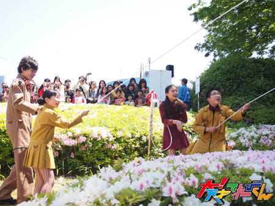
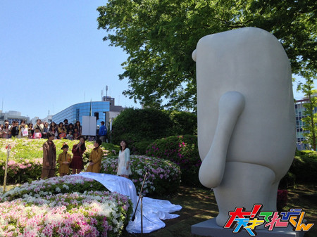

<<2013年4月 | トップページ | 2013年6月>>
2013年5月
【２０XX年、私の理想の結婚式】岡田結実
白いドレスはもちろん、お色直しでドレスを変え、
４着くらいドレスを着たいです！
たくさんの友達を招待し、
白い教会で式を挙げ、外でフラワーシャワーをしてもらい、
近くの会場での披露宴ではケーキを食べたりして、
楽しい結婚式にしたいです！
そして最高の旦那さんを見つけます☆彡
最近の身近なできごと
ママとケンカしました。
理由は結実がお弁当箱を洗い場に出さないからです。
ママのお弁当はいつも「キャラ弁」で大好きなんですが、
怒られたので、もう作ってもらえないのかと落ち込んでいました。
でも翌日お弁当を結実のカバンに入れてくれていて、
中身も「キャラ弁」だったので、とても嬉しいです！
投稿者:岡田結実 | 投稿時間:18時00分 | カテゴリ：We are 大天才テレビジョン | 固定リンク


 " title="ソーシャルブックマークについて">
" title="ソーシャルブックマークについて">
※NHKサイトを離れます。
【２０XX年、私の理想の結婚式】山田陶子
最近、学校にツインテールで行く陶子サンでございます！
私の「理想の結婚式物語」はじまりはじまり～(=^・・^=)♪
シンプルで有りながら、可愛いウエディングドレスを着た陶子サン。
ハワイの教会で式を挙げ・・・。
優しく見守る、私より５～10㎝背の高いイケメンのお相手と腕を組み・・・。
ホテルで、家族と沢山の友達にお祝いのパーティーを開いてもらい・・・。
ホテル横の海沿いの崖にレッドカーペットの白バージョンをひいて・・・。
ハワイの日差しを浴びながら、その美しい白い道を歩く2人。
目の前には輝いた海。
記念撮影v(・o・)v
おわり
最近の身近なできごと
実は最近、フレンチトーストにハマっちゃってんです！
も～超美味しいんですぅ～！！！！！
食べすぎには！！！！！！！！！！！！！！！！！！！！！！！
＞＜注意です＞＜
陶子サンより
投稿者:山田陶子 | 投稿時間:18時00分 | カテゴリ：We are 大天才テレビジョン | 固定リンク
" title="ソーシャルブックマークについて">
※NHKサイトを離れます。
【２０XX年、私の理想の結婚式】中里萌
１０年後ぐらい・・・？？
ハワイで優しい彼と♪
白い小さなヨットがぽつりと浮かんでいて
エメラルドグリーンの海が見える教会で
真っ白で、ベールが長いドレスを着た私は結婚をしました。
なんつって（爆笑）
こんな結婚式ができたら
幸せすぎますね～(//∇//)
最近の身近なできごと
ついこの間、女の子の友達とお泊り会をして、
人生初の顔パックをしました！！
そしたら～！！
次の日、顔が「もちもち」になってましたー！！
それからハマってまーす！！
投稿者:中里萌 | 投稿時間:18時00分 | カテゴリ：We are 大天才テレビジョン | 固定リンク
" title="ソーシャルブックマークについて">
※NHKサイトを離れます。
【２０XX年、私の理想の結婚式】延命杏咲実
15年後・・・私は24才です。
15年後の私が、今、結こん式をあげようとしています。
「ゴンゴーン」教会のベルがなりひびきました。
教会での結こん式が始まりました。
お父さんと、となりにいます。
お父さんはくやしそう（笑）
私が今、夫になる人にひきわたされました。
「これから、2人で幸せにくらします！」かれが言いました。
かれにゆびわをはめてもらい、私はすごくうれしいです。
まわりには「あさみちゃんの方が結こんしたのが早かった・・・」と
くやしなみだを流している友だちや
「おめでとう！」とうれしなみだを流している友だちとか
いろいろな人が来てくれました。
かれの友だちもうれしそう！
こうして、楽しく結こん式が終わりました。
～かい説～
1 ：教会で結こん式をあげたいです。
すごくロマンチックな感じがして、ゆめみたいです♪
2 ：いろんな人がいる中での結こん式をあげたいです。
私、目だちたがり屋なので（笑）
3 ：24才で結こん式をあげたいです。
それぐらいが、ちょうどいいと私は思います。
最近の身近なできごと
私のクラスは1日2文字ずつ漢字を習うのですが。
たまたまこの間、結実ちゃんの「結」という字と、
つかちゃんの「司」という字をいっしょに習いました。
何かのえんがあるのかと思いました。
すごくびっくりしました。
投稿者:延命杏咲実 | 投稿時間:18時00分 | カテゴリ：We are 大天才テレビジョン | 固定リンク
" title="ソーシャルブックマークについて">
※NHKサイトを離れます。
【押忍！シャイ番長友情の旅】 第６回 金子の日記
「押忍！シャイ番長友情の旅」６回目の放送、ご覧いただけましたか？
動物柄の服を着て戻ってきてくれた心優しい前原さんと、ついにたこ焼作り！
ついたこ焼作りに夢中になって会話を忘れていたら・・・スタッフさんに呼び出されてしまいました。
でも、このままで終わりたくない！シャイ番長の巻き返しを日記でも楽しんでください。
左クリックをすると、原寸大になります。
投稿者:金子隼也 | 投稿時間:18時54分 | カテゴリ：お知らせ！ | 固定リンク
" title="ソーシャルブックマークについて">
※NHKサイトを離れます。
【２０XX年、私の理想の結婚式】金子隼也
僕の理想の結婚式は
海外で結婚式をしたいです。
綺麗な景色の前で
ケーキ入刀とかやりたいなー。
最近の身近なできごと
この前体育祭がありました。
体育祭当日は、すごく天気が良くて
体育祭にもってこいの天気でした。
1番緊張したのは初めてやった組体操です。
すごく難しくて練習では失敗して、
本番は緊張でバクバクでした。
本番はノーミスで終わって嬉しかったです！
今年は優勝できなかったけど、
クラスの団結力が深まったんじゃないかと思いました。
投稿者:金子隼也 | 投稿時間:18時00分 | カテゴリ：We are 大天才テレビジョン | 固定リンク
" title="ソーシャルブックマークについて">
※NHKサイトを離れます。
【２０XX年、私の理想の結婚式】中尾美晴
美晴の理想の結婚式か☆
シンプルな式がいいな！
だからもちろん、ドレスとメイクもシンプルで！
式は大自然で空気のきれいな所でしたいな☆
美晴のだんなさんは、どんな人がいいかなー。
理想は美晴のお兄ちゃんみたいに優しくて、
お父さんみたいにちゃんと仕事してくれる人で、おもろしくて、頭が良くて、
それと・・・と言い出したら止まらへんからここまでにしとこう。
あと１つ大切な事があるわ。
式をどこで挙げるのか！！
そりゃそこでしょう！
青くて、どこまでも続く空の下にある海を一人じめできるあそこ！！
☆ハワイ☆
ここじゃないとね～！
あっ、式が始まった！緊張する。
でも誰よりも緊張している人は、仲人役のあの人！
「やばいよ、やばいよ」
「ボス、頑張って！」
美晴は心の中で思った。
最近の身近なできごと
最近、寝不足の美晴です。
なぜなら、犬のポチエナが美晴のベッドで大の字になって寝るからです。
美晴をまくらにします。
重くて目が覚めます。
でも、寝顔を見ると、可愛くて許してしまうねん♪
そばにいるから、怖い夢見ても大丈夫やしね☆
犬っていいよね！
投稿者:中尾美晴 | 投稿時間:18時00分 | カテゴリ：We are 大天才テレビジョン | 固定リンク
" title="ソーシャルブックマークについて">
※NHKサイトを離れます。
【迷子になった思い出】岡田結実
１年ぐらい前に、2010年度のてれび戦士、
田代ひかりと新宿で待ち合わせしてたら
2人とも降りた場所がバラバラで、
ゆいもひかりも駅をよく分からないから
2人で動き回り、駅員さんに道を聞いたりして、
約1時間以上かけて会えました^^;
でも本当に泣きそーになるぐらい大変でした！！
その後に、2012年度のてれび戦士、
長江崚行が入っているグループのライブを見るはずが
1時間以上経っているので少しおくれちゃいました。
今度から新宿駅で待ち合わせはしないと決めましたっ♪♪
最近の身近なできごと
今年から中学生になり、慣れないこともふえてきて、
昼休みや中休みなどがあると思っちゃうことや・・・
数学を小学校の時みたいに算数って言っちゃったり・・・
慣れないことだらけで大変ですね・・・。
勉強も大変になってきたけど、がんばってます！
投稿者:岡田結実 | 投稿時間:18時00分 | カテゴリ：We are 大天才テレビジョン | 固定リンク
" title="ソーシャルブックマークについて">
※NHKサイトを離れます。
【迷子になった思い出】野田真哉
小さい時にデパートに行って気になるおもちゃを見ていました。
おもちゃに夢中になっていたらお母さんを見失ってしまいました。
そんで色々探していたらアイスクリーム屋の前で
お母さんがいたぁっと思って飛びついたら
全然知らない人でした・・・。
よく見たらとなりにお母さんいました。
めちゃめちゃ恥ずかしかったです。
最近の身近なできごと
学校で今度、中間テストがあります！
なのに全然勉強できてません！
やばい～！！！
大ピンチです・・・
まぁがんばりますww
投稿者:野田真哉 | 投稿時間:18時00分 | カテゴリ：We are 大天才テレビジョン | 固定リンク
" title="ソーシャルブックマークについて">
※NHKサイトを離れます。
【迷子になった思い出】黒澤美澪奈
どうも！みれなです(＾▽＾)/
よく私は、科学館に遊びに行くんです！！
そこでよく私はじっくり見ていくタイプなので
よくお父さんとお母さんとはぐれてしまいます！笑
でも、全力でさがします！
それからは、はぐれないようにします・・・。
みなさんも、気をつけてください～(^∇^|||)
最近の身近なできごと
学校のぎょうじで、ずっと立っていたんです。
なので、ぎょうじのと中からもう足がヒリヒリ、ピリピリして・・・
かえって、きょう室についていすにすわったら
「あぁぁ～」ってかんじがして、しあわせでした。
ちょっとしたことだけど、すごくしあわせでした。
投稿者:黒澤美澪奈 | 投稿時間:18時00分 | カテゴリ：We are 大天才テレビジョン | 固定リンク
" title="ソーシャルブックマークについて">
※NHKサイトを離れます。
【押忍！シャイ番長友情の旅】 第５回 金子の日記
「押忍！シャイ番長友情の旅」５回目の放送、ご覧いただけましたか？
動物柄の服を着ている人とたこやきパーティー実施を目指すシャイ番長。
友達になってくれる人がみつからないまま時間ばかり過ぎて行くかと思ったが…
左クリックをすると、原寸大になります。
投稿者:金子隼也 | 投稿時間:18時54分 | カテゴリ：お知らせ！ | 固定リンク
" title="ソーシャルブックマークについて">
※NHKサイトを離れます。
【迷子になった思い出】相澤侑我
ぼくは絶対迷子になりません。
1人になっちゃうなんて怖すぎる(ﾟ_ﾟ)
いつも迷子にならないように気をつけてます。
でもこの間、ちょっと迷子になったと思って
周りをキョロキョロしてたら
お母さんが来て
「迷子になったと思ってびっくりしたんでしょ～」っと言われて
ちょっとはずかしかったですf(^_^)
最近の身近なできごと
ぼくの自転車置き場が上の段だから
いつも自分で下ろせなかったの(>_<)
でも5年生になって力が強くなって
自分で下ろせるようになったんだ！
すごい重いけどネ（笑）
投稿者:相澤侑我 | 投稿時間:18時00分 | カテゴリ：We are 大天才テレビジョン | 固定リンク
" title="ソーシャルブックマークについて">
※NHKサイトを離れます。
【迷子になった思い出】長谷川ニイナ
Hello！！ 長谷ニイで～す！！
皆さん、迷子になった事ってありますか～？？
一回、小さい頃に大型スーパーで
迷子になったことがあったんですけど、
その時はもう最悪でしたよ～。
３０分ぐらい探しても、お父さんとお母さん、誰一人見つからなくて、
やっと見つけたと思って
「ママ～！！」って激突したら・・・。
まさかの「「店員」」。
ショックだったなぁ～。
せめて突撃しなければ良かったんですけど・・・。（泣）
でも、最後は192cmのお父さんの頭が
ひょっこり見えて、解決でした！！
ふぅ～、帰ってなくて良かった～！
セーフです！
最近の身近なできごと
私の近況報告をすると・・・。
あ、そう言えば！！
お庭にトマトを植えました！！
欲張って、パプリカやオクラも植えましたよ～！
まぁ、植えたはいいんですけど、
正直その後が心配です～・・・。
ちゃんとトマトになるまで育てられるかどうか（笑）
3日ぼうずになりやすい私ですので！
イヒッ！！
こんな私ですけど、これからも宜しくお願いします(*＾ｖ＾*)

投稿者:長谷川ニイナ | 投稿時間:18時00分 | カテゴリ：We are 大天才テレビジョン | 固定リンク
" title="ソーシャルブックマークについて">
※NHKサイトを離れます。
【迷子になった思い出】島田太一
あれは、ボクが幼稚園年中組の時です。
ボクが通っていた幼稚園のスグ隣に超大型スーパーがあるんです。
お母さんと2人でそのスーパーに行った時に迷子になってしまったのです。
ボクがお菓子売り場を見ているうちに、お母さんはいなくなってました。
おそらく、それが人生初迷子だったのです。
ボクが探していたら、1人でウロウロしてるので声をかけられました。
そこでマイクを使ってスーパー全体に迷子のお知らせをしたのです。
お母さんは無事見つかったのですが。
次の日、幼稚園に行ったら
「太一くん、昨日迷子だったねぇ」と
とてもはずかしかったです。
最近の身近なできごと
卓球に本入部しました。
仮入部にもいってたのしかったので、
今はスマッシュをうてる様に練習しています。
上達出来るように頑張りたいです。
投稿者:島田太一 | 投稿時間:18時00分 | カテゴリ：We are 大天才テレビジョン | 固定リンク
" title="ソーシャルブックマークについて">
※NHKサイトを離れます。
【迷子になった思い出】中尾美晴
どーも！みはるです☆
いや～。迷子か。ある、ある、あるーーー。
お店でめっちゃ可愛いテープがあって。
だからずーっと見てたら
知らへんうちにお母さんが消えちゃって・・・。
あの時は焦ったわ～。
でも変に動いてすれちがってもいややなと思ったから。
・・・。
ずっとそこにいたらお母さんが美晴の所まで
（見つけられたみたいでっ）きてくれて！
その時はホッとしたで～
よかったわ～。
もう迷子にならんようにしな！
気をつけるね～。
では！バイバイ♪
最近の身近なできごと
なんと！新しいメガネを買ってもらったの！！
やった～！
その色は赤色で久しぶりにシンプルなのにしようと思って！
つるがシンプルなのにしたよ☆
今までは、つるが水玉～とかだったけど。
これで８コ目のメガネです～。
うれしい！うれしい！うれし～い！！パラダ～イス
自分にめっちゃ似合うのにしたで！
次は緑色にしようかな～♪
オレンジ色にしようかな～♪

投稿者:中尾美晴 | 投稿時間:18時00分 | カテゴリ：We are 大天才テレビジョン | 固定リンク
" title="ソーシャルブックマークについて">
※NHKサイトを離れます。
【迷子になった思い出】竹原司
こんにちは！司です。
迷子になった思い出は、あります。
それはまだ幼稚園の年少だったころに、
お父さんの買い物について行っている時に
お父さんが大きいデパートに行って
テレビやエアコンを見て帰ろうとして
地下におりていた時に、
気づいたらお父さんがいなくて、
とにかくさがそうと思ったけど
怖くて泣いてしまったら、
その声を聞いてお父さんが来てくれました。
その時は安心しました。
最近の身近なできごと
最近の出来事は、初めて友達と親無しで
映画を見に行った事です。
もうめっちゃくっちゃ楽しくて、
またいっしょに映画を見たいなと思いました。
投稿者:竹原司 | 投稿時間:18時00分 | カテゴリ：We are 大天才テレビジョン | 固定リンク
" title="ソーシャルブックマークについて">
※NHKサイトを離れます。
【押忍！シャイ番長友情の旅】 第４回 金子の日記
「押忍！シャイ番長友情の旅」４回目の放送、ご覧いただけましたか？
シャイ番長、大阪編。当然ながら友達作りはそう簡単には行かず！！
山あり谷ありの展開を、シャイ番長の日記でもお楽しみください。
左クリックをすると、原寸大になります。
投稿者:金子隼也 | 投稿時間:18時54分 | カテゴリ：We are 大天才テレビジョン | 固定リンク
" title="ソーシャルブックマークについて">
※NHKサイトを離れます。
【迷子になった思い出】中里萌
迷子・・・
あれは５さいの時でした。
自分では、うすーい記憶しか残っていなくて、
細かい話はお母さんに聞いたのですが、
家の近くのお店で、お母さんとハグれてしまったそうです。
そこまでは、普通の迷子ですが・・・・・・
ハグれてしまった後、お店の人につれられて、お店の奥のいすに座り、
のんきにお菓子を食べていたそうですぅ～～～（笑）（笑）
しかも、泣いてもいなかったとの事です！！
今思うと、面白いです（笑）
最近の身近なできごと
実は最近、鳥になりました。
家族で旅行に行った時に、
ワイヤーにつるされて、移動をする体験をして来ました！！
とーーーっても楽しかったです！！！
もう１度、体験してみたいなぁ！
投稿者:中里萌 | 投稿時間:18時00分 | カテゴリ：We are 大天才テレビジョン | 固定リンク
" title="ソーシャルブックマークについて">
※NHKサイトを離れます。
【迷子になった思い出】ソーズビー航洋
だいぶ前の冬のお祭りで、
いとこといとこのお母さんと行って、
いとこのお母さんがおもちを買ってるのをしらなくて、
勝手にいろいろ遊んでいたら、
ハグれちゃって
はじめて迷子になったから「どうしよう！」ってなりました！
で、お呼び出しの放送して、
いろんな友達が聞いていたから
はずかしかったです！！
最近の身近なできごと
この前アメリカの故郷の家に居た犬の三匹中一匹が死にました。
ルーウェスです。（写真のカメラ目線の子）
ずいぶんお年寄りだったみたいで、疲れも出ていたそうです。
結果安楽死を決断し、天国へ静かにお見送りしました。
1番可哀想なのは、もう一匹の同じ犬種の女の子ルナです。（ルーウェスの後ろにいる黒い子）
約10年間ずっと夫婦のようにずっと一緒に居たその相手がなくなってしまった。
もう一匹チワワ（写真の左側）の子がいるけど、さすがに10年は可哀想ですね。
ルーウェスは、とっても良い子で、優しい子でした。
ぼくがアメリカ行った時は、寝る時も狭いベットにドカンと乗っかってきて、
冬なんかは丁度いい暖かさにしてくれました。
３年前にアメリカに言った時に、ぼくはある歌を繰り返し歌ってました。
次の年。２年前、彼はこの曲をワンワン歌ってました。
この子は、犬のすごさや可愛さなどを教えてくれる甘えん坊さんでした。
本当にありがとう。ルーウェス。天国でも頑張ってね。
投稿者:ソーズビー航洋 | 投稿時間:18時00分 | カテゴリ：We are 大天才テレビジョン | 固定リンク
" title="ソーシャルブックマークについて">
※NHKサイトを離れます。
【迷子になった思い出】延命杏咲実
延命です！
私はまい子になったことはないですが、
なりかけたことはあります。
近くのスーパーで買い物をすませた後に、
家に帰ろうとした時、
ちょっとガチャガチャを見ていたら、
お母さんとお父さんがいなくなっていてびっくり！
でも、お母さんとお父さんがむかえに来てくれたのでよかったです。
は～。
びっくりした！
最近の身近なできごと
さい近、私はかぜをひいてしまいました。
私は、よくイベントの前になると、
かぜをひいてしまいます。
画面さくらちゃんも、私とにているので、
去年のNHK文化祭の時に
かぜをひいていたらしいです。
でも、私のかぜはもっとすごくて、
お母さんにもうつしてしまいました。
お母さんのかぜが治らないので、
私が飲んでいる児童用のかぜ薬を飲んだら、
すごくきいて治りました。
児童用を大人が飲んでもきくのですね。

投稿者:延命杏咲実 | 投稿時間:18時00分 | カテゴリ：We are 大天才テレビジョン | 固定リンク
" title="ソーシャルブックマークについて">
※NHKサイトを離れます。
【迷子になった思い出】金子隼也
小さい頃に大型のスーパーに行った時に
迷子になってしまいました。
小さい頃だったので
もう泣きながら走っていました（笑）
周りの人がビックリした顔で見ていたのを
鮮明に覚えています。
最後には会えたのですが
それ以来何かに夢中になっても
家族と離れないようになりました。
みんなも気をつけてね！
最近の身近なできごと
この前収録が早く終わった日に
映画を見に行きました。
映画を見るとき、
必ずポップコーンを食べるのですが
映画が始まる前には
半分以上食べ終わってます（笑）
ちなみにこの日は塩バター味でした。
投稿者:金子隼也 | 投稿時間:18時00分 | カテゴリ：We are 大天才テレビジョン | 固定リンク
" title="ソーシャルブックマークについて">
※NHKサイトを離れます。
【迷子になった思い出】山田陶子
小さい時なんですが・・・
ママがデパートに、
ヨン様を見に行ってたんですネ！！
私は、ついていったんですが、
友達とおもちゃコーナーで遊んでいたんですネ！！
けど、とつぜん、
「ママに会いたい！！」って思ったんですネ！！
それで、
フラーフラフラーーーーって
どっか行っちゃったんですネ！
・・・・・・
そんな感じです！！
最近の身近なできごと
そう！！
２０１２年度の大天ブログでやった！！
どんぐりの木！！
※2013年3月4日のブログより
大きくなったんです！！
かんどう・・・
では～
投稿者:山田陶子 | 投稿時間:18時00分 | カテゴリ：We are 大天才テレビジョン | 固定リンク
" title="ソーシャルブックマークについて">
※NHKサイトを離れます。
【人生の中で最高に恥ずかしかった失敗】黒澤美澪奈
こんにちは！みれなです(＾▽＾)/
恥ずかしかったことは・・・
私はいつも、学校に登校するときは、
集団で行ってるんですけど・・・
５年生の冬。事件はおきたんです！
雪がふった次の日だったので、
道がつるつる凍ってたんです。
そして、みんなに
「つるつるすべるから気をつけてね～♪」
と下級生に言ったそのしゅん間！
前に氷があることに気づかなくて、
そのままつーっとすべって、
しりもちをついてしまいました(T△T)
すごく下級生に笑われました・・・（泣）
みなさんも、雪のふった次の日（冬は、まだ先ですが・・・）
気をつけてくださいね～(＾▽＾)
みれなでした～♪
投稿者:黒澤美澪奈 | 投稿時間:18時00分 | カテゴリ：We are 大天才テレビジョン | 固定リンク
" title="ソーシャルブックマークについて">
※NHKサイトを離れます。
【人生の中で最高に恥ずかしかった失敗】竹原司
こんにちは！！司です！
人生で恥ずかしかった失敗は・・・
まぁ、恥ずかしいことを自分から
『バンッ！！』とやる性格だからな・・・。
恥ずかしかったことといえば、
最近学校の体育で
いろいろな走り方をやっていて、
四つんばいで犬みたいに走る走り方をやる前に
「これ得意！」と言っておきながら
ビリになって、
「ぜんぜ～ん得意じゃないじゃん。」
と友達に言われて
恥ずかしかったー！
次に書くのはみれなちゃんです！！
みれなちゃんは、
よくツッコんでくれて、よく笑ってくれるので、
ギャグをやったがわとしては
とてもうれしいです。
この前は、
僕がギャグをやってしらけたのに
笑ってくれて
すごくうれしかったです。
みれなちゃんには
これからも笑っていてほしいです！
投稿者:竹原司 | 投稿時間:18時00分 | カテゴリ：We are 大天才テレビジョン | 固定リンク
" title="ソーシャルブックマークについて">
※NHKサイトを離れます。
【速報】てれび戦士除幕式に出るの巻
本日、５月３日（金・祝）からNHK放送センターで開催しているイベント「渋谷DEどーも」。
それを記念して体長４ｍの巨大どーもくん像がお披露目されました。
その除幕式に参加したのはなんと金子、ニイナ、島田、延命ちゃん！！

では蝶ネクタイを直してもらっている島田の写真から、その模様をご覧頂きましょう。

白い布に包まれた怪しい物体…これがもしや……

司会：それではどうぞ！ てれび戦士：どうもー！！
お約束のやりとりがあって、てれび戦士の４人がひもを引っ張り幕を外します。

除幕されたどーもくん。白い！白すぎる！！

今にも動き出しそうですが、微動だにしません。そして４ｍは大きいですねー

なお、ＮＨＫ放送センターとなりのスタジオパークにて、「大！天てれ展」が開催中です。
会期は５月１９日（日）までですが、２日（木）～６日（月）までは無料公開デー！誰でも無料で入場できます。
てれび戦士たちが除幕したどーもくんを見てからお越しください。
詳しい情報はこちらからチェック！
投稿者:大天才テレビジョン社員１号 | 投稿時間:15時00分 | カテゴリ：お知らせ！ | 固定リンク
" title="ソーシャルブックマークについて">
※NHKサイトを離れます。
【人生の中で最高に恥ずかしかった失敗】長谷川ニイナ
私が人生の中で最高に恥ずかしかった失敗をしてしまったのは
幼稚園の時です・・・。
（その時というよりは、
今改めて考えると最高に恥ずかしい事件です。）
お母さんと弟と私で、デパートに行った時に
量を測って売るちりめんじゃこが並べてありました。
そしたら、私と弟、
なんとそれを食べちゃったんです！！
試食だと勘違いして（汗）
Oh！ My！God！
それで店員さんに激怒されちゃいました^^;
店員さん、あの時はごめんなさい！！
恥ずかしいです・・・！！
次の人は・・・
つかちゃんでーす！！
つかちゃんとは本当に仲が良くて、よくコントのような（？）、
アクション映画のような（？）ものをよくやるんです！
設定はいつもなぜか決まっていて、
つかちゃんのパンチや鉄砲で私がやられるっていう・・・。
あと、オチも毎回ちゃんと決まっていて、
私が逆に攻撃しようとすると、急に
「えっ、ニイナちゃん、なにしてるの？」って言われるんですよ！！
くそ～、つかちゃん！（笑）
そう言えば・・・。
つかちゃんのつけてるスカーフの黄色いリング、
私とつかちゃんの間では
「レグルスの光」って呼んでいるんです！！
あのリングには何かあるみたいですよ～。
本当かな？
皆さんは信じますか・・・・・・？？（笑）
NINA
投稿者:長谷川ニイナ | 投稿時間:18時00分 | カテゴリ：We are 大天才テレビジョン | 固定リンク
" title="ソーシャルブックマークについて">
※NHKサイトを離れます。
【人生の中で最高に恥ずかしかった失敗】相澤侑我
学校で作文を書いたら、
教育委員会から表彰されて、
校長先生から賞状をもらうことになった！
今日は朝会で表彰式をやると言われ、
はりきって体育館に行った。
いよいよ表彰式になって、壇上に行くと、
校長先生は僕の顔を見て女だと思ったらしく、
全校生徒の前で
「あいざわゆうか」と言った。
めっちゃくっちゃはずかしかった・・・。
次はニイナちゃん！
ニイナちゃんは
「大！木曜LIVE」の時に
よく１人で中継してくれてるよね！
すご～い♪
中継も上手だし、１番年上だから、
みんなのお姉さん(＾▽＾)
いつもたよりにしてまぁす！
投稿者:相澤侑我 | 投稿時間:18時00分 | カテゴリ：We are 大天才テレビジョン | 固定リンク
" title="ソーシャルブックマークについて">
※NHKサイトを離れます。
ページの一番上へ▲